XY Motor Assembly
Press-fit a drive gear onto the shaft of a stepper motor, making sure to align the flat of the shaft with the flat of the shaft hole. Repeat this with the other drive gear and another stepper.
| 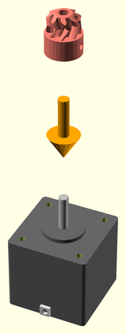 | 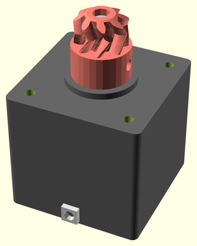 |
Motor Mount Assembly
Attach a limit micro-switch (with wiring) to one of the side clips, with the lever end towards the center. Do this again for a second switch and mount plate.
| 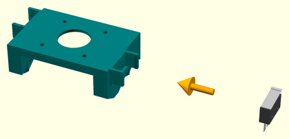 | 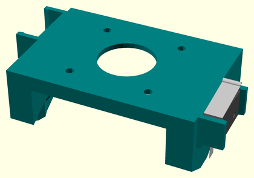 |
Y Motor Segment Assembly
Seat the stepper motor with drive gear in the X/Y motor rail segment. Clamp it into place with a motor mount plate with micro-switch. Route the wiring out a side wiring access hole opposite the limit switch.
| 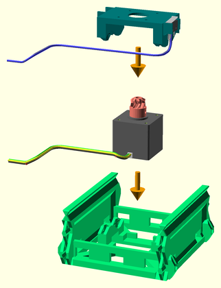 | 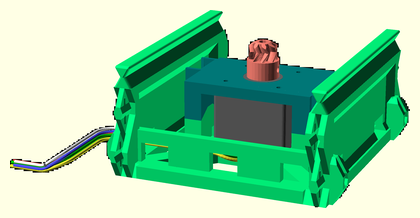 |
Y Axis Assembly
Step 1
Join a rail segment to each end of another motor rail assembly.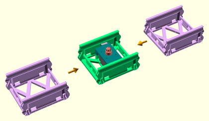 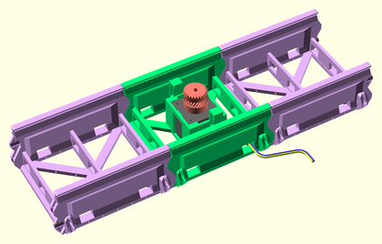 Step 2
Join opposing platform supports to either side of the sled endcap. Point the tabs toward the side with the joiners.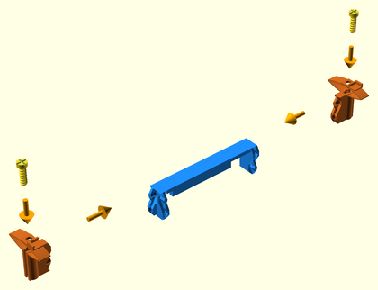 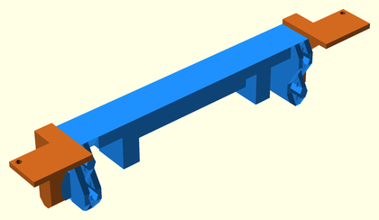 Step 3
Join two XY sled parts together. Make sure the bottom racks line up.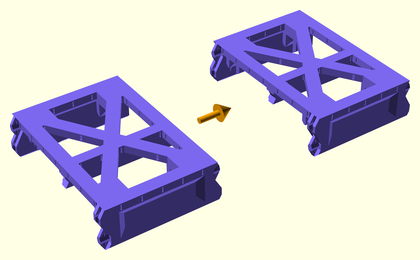 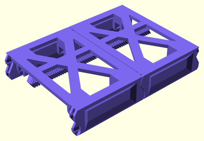 Step 4
Join a Y sled endcap assembly to one end of the Y sled central assembly.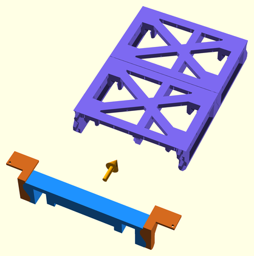 
Step 5
Slide the Y sled partial assembly onto the Y axis rails assembly, so that it is centered.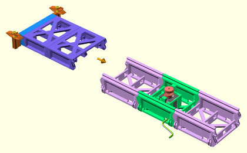 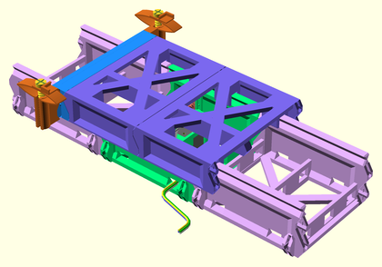 Step 6
Join the other Y sled endcap assembly to the end of the Y sled partial assembly.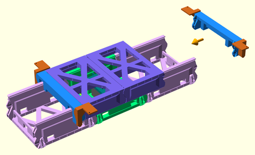 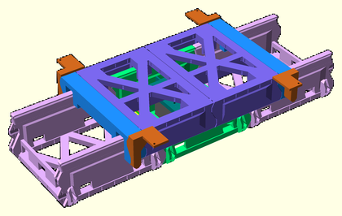 Step 7
Join a rail endcap to each end of the Y axis with completed sled assembly.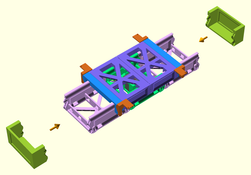 
X Motor Segment Assembly
Seat the stepper motor with drive gear in the X/Y motor rail segment. Clamp it into place with a motor mount plate with micro-switch. Route the wiring out one end.
| 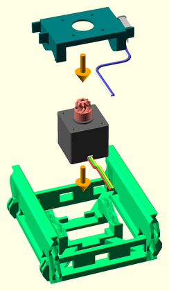 | 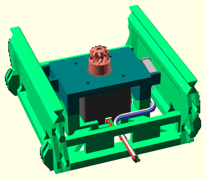 |
X Axis Assembly
Step 1
Join a rail segment to each end of a motor rail assembly, to make the X axis slider. Route the wiring to one end of the slider assembly.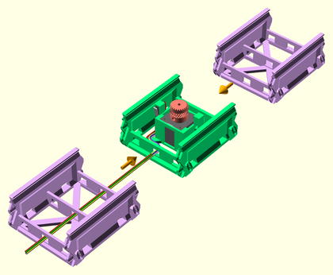 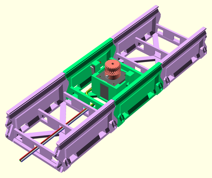 Step 2
Join two XY sled parts together. Make sure the bottom racks line up.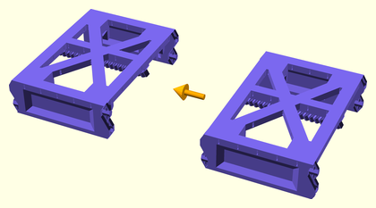 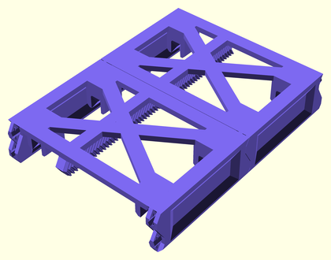 Step 3
Join the X sled cable-chain mount to the front/left side of the X sled endstop.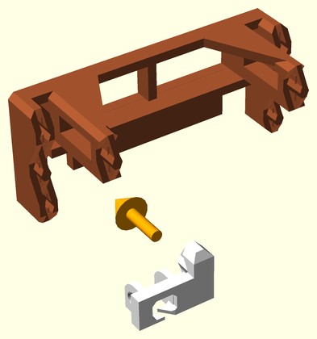 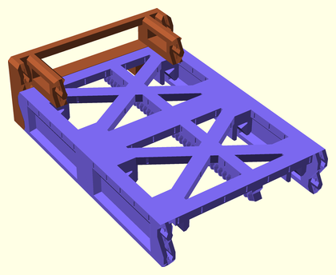 Step 4
Join an X sled endcap assembly to one end of the X sled central assembly.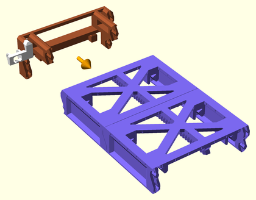 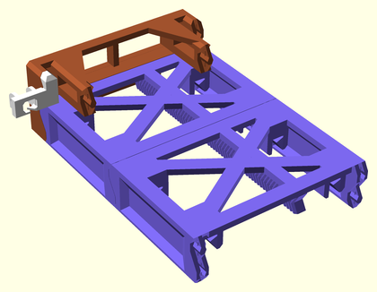 Step 5
Slide the X sled partial assembly onto the X axis rails assembly, so that it is centered.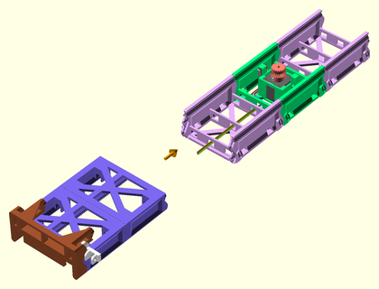 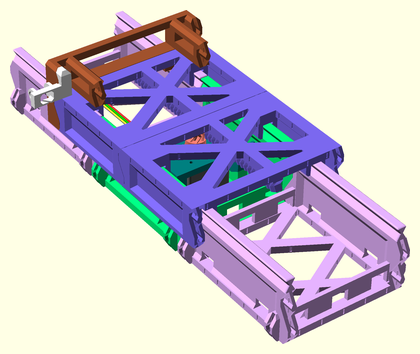 Step 6
Connect the Y axis assembly to the XY joiner on the X axis partial assembly. Route the Y axis wiring through the front hole in the XY joiner.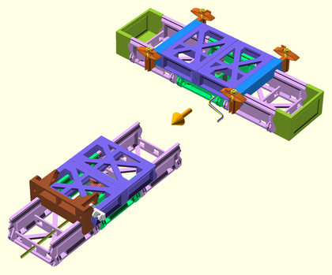 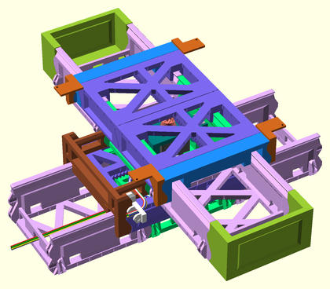 Step 7
Join the other X sled endcap assembly to the end of the X sled assembly, fixing the Y sled assembly in place.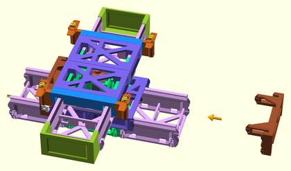 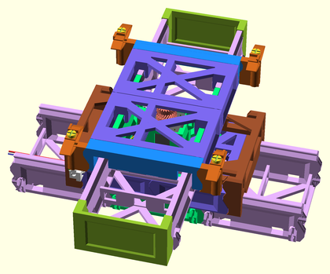 Step 8
Attach the cable chain joiner mount to the X motor segment, on the same side as the X sled cable chain joiner and Y axis wiring.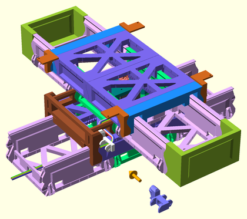 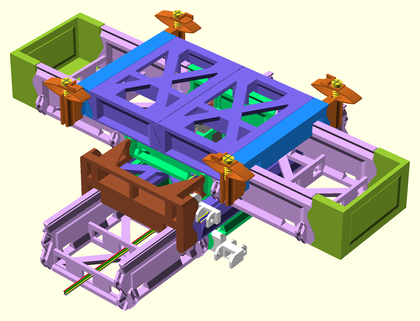 Step 9
Attach the cable-chain assembly (with 13 or 14 links) to the cable chain mounts on the X axis assembly, making sure to feed the Y-axis wiring through the cable chain. Route the wiring in through the wiring access hole beside the cable chain mount, then out through the end of the X axis assembly.
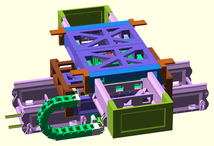
Z Tower Assembly
Step 1
Seat the stepper motor in the Z motor rail segment. Clamp it into place with a motor mount plate without micro-switch. Route the motor wiring out the bottom of the rail.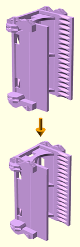 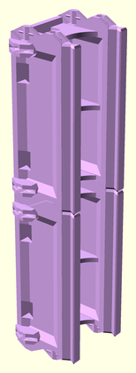 Step 2
Screw the lock nut onto the threaded rod.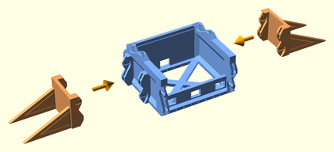 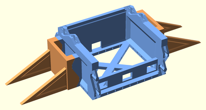 Step 3
Screw the rod into the coupler fully, then tighten the lock nut up against the coupler.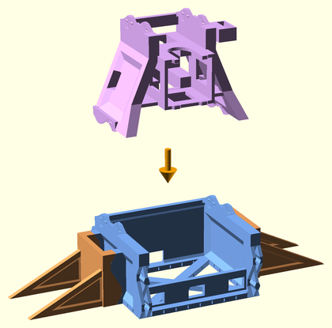 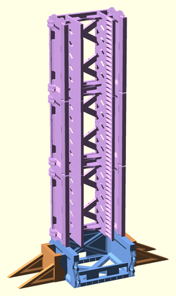 Step 4
Press-fit the lifter rod assembly to the mounted motor shaft. Make sure the flatted side of the shaft is aligned with the flat of the shaft hole.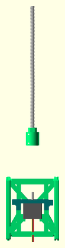 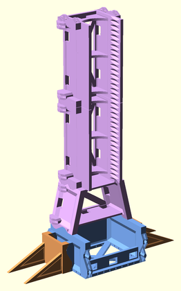 Step 5
Attach two rail segments to the top of the motor Z lifter assembly.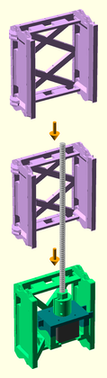 
Step 6
Attach support legs to each side of the yz_joiner part.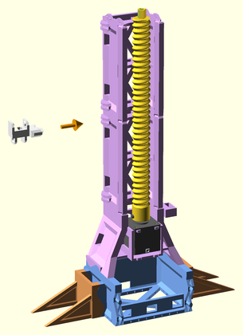 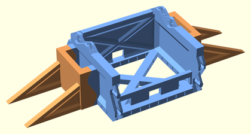
Left Z Tower Assembly
Step 1
Attach the Z rail assembly to the top of a YZ joiner assembly. Route the wires through the back of the YZ joiner.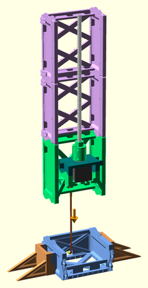 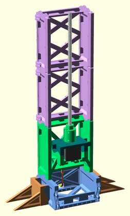 Step 2
Attach a cable chain joiner mount to the front-size of the left Z tower, above the top hole of the bottom rail segment.
Right Z Tower Assembly
Attach the Z rail assembly to the top of the YZ joiner assembly. Route the wires through the front of the YZ joiner.
 |
Extruder Bridge Assembly
Step 1
Insert the 686 bearing into the extruder idler arm.Step 2
Insert the idler axle through the 686 bearing, and lock it into the extruder idler arm with the axle cap.
Step 3
Attach the extruder drive gear onto the stepper motor shaft.
Step 4
Slide the JHead extruder hot end into the slot in the bottom of the JHead platform. Route the wiring up through the wiring access slot, and along the back of the extruder platform.Step 5
Clip the extruder motor with drive gear to the jhead platform using the extruder motor clip.Step 6
Insert the idler arm into the idler hinge hole on the JHead platform.Step 7
Insert the idler latch arm into the latch hinge hole on the JHead platform.Step 8
Insert the extruder fan shroud into the JHead platform, latching the JHead hot end, and idler and latch arms into place.Step 9
Clip a cooling fan to the top of the extruder fan shroud using the extruder fan clip part. Route the wiring along the back side of the extruder platform.
Step 10
Attach a cooling fan to the cooling fan shroud.Step 11
Attach the cooling fan shroud assembly to the bottom of the extruder fan shroud. Route the wiring up through the wiring access slot, and along the back side of the extruder platform.Step 12
Attach rail segments to either end of the extruder platform assembly. Route the wiring through the left side rail segment, and out the front-left wiring access hole.Step 13
Attach a vertical cable-chain mount to the front left side of the extruder bridge.Step 14
Attach Z sled segments to either end of the extruder bridge assembly.
Final Assembly
Step 1
Attach the right Z tower assembly to the right end of the XY axes assembly. Route the right tower wiring through the rear X axis wiring access holes.
Step 2
Attach the left Z tower assembly to the left end of the XY axes assembly. Route all wiring out the back of the left Z tower base.Step 3
Lower the extruder bridge down into the Z tower grooves, screwing the lifter rods into the Z sleds evenly.Step 4
Attach a limit microswitch, with wiring, to the Z rail endcap.Step 5
Attach the Z tower endcap to the left Z tower. Route the limit switch wiring down through the wiring access holes in the left Z tower, and out the back of the base with the other wiring.Step 6
Attach a cable chain (17 links) from the extruder bridge cable chain mount to the left Z tower cable chain mount. Route the extruder bridge wiring up through the cable chain, back into the left Z tower through the wiring access hole below the cable chain mount, down the left Z tower, and back out the motor rail segment to where the controller board will be mounted.Step 7
Attach the spool holder to the top of the other Z tower.Step 8
Attach the RAMPS motherboard mount to the end of the printer base.Step 9
Clip the glass build platform to the build platform supports using four binder clips.Step 10
Cradle the spool axle in the spool holder top.